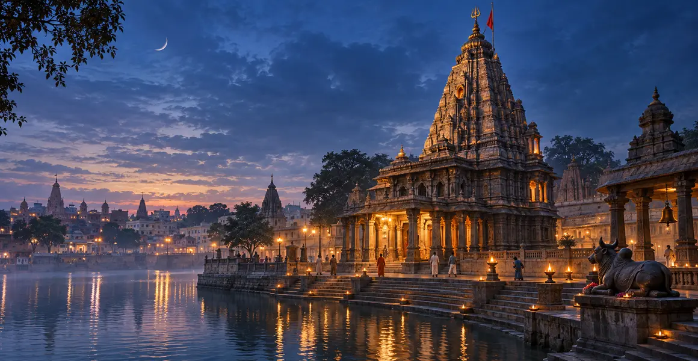

महाकालेश्वर ज्योतिर्लिंग
उज्जैन, मध्य प्रदेश, क्षिप्रा नदी के तट पर में स्थित महाकालेश्वर ज्योतिर्लिंग की पवित्र कथा, इतिहास, स्थापत्य, पूजा, उत्तरदायी यात्रा और आंतरिक शिक्षा की विस्तृत मार्गदर्शिका।
एक दृष्टि में
स्थान
उज्जैन, मध्य प्रदेश, क्षिप्रा नदी के तट पर
पवित्र स्वरूप
महाकालेश्वर ज्योतिर्लिंग
मार्गदर्शिका
कथा, इतिहास, पूजा और तीर्थयात्रा
इस मार्गदर्शिका के प्रमुख विषय
महाकाल: काल से परे भगवान
महाकालेश्वर ज्योतिर्लिंग क्षिप्रा नदी के तट पर स्थित प्राचीन उज्जयिनी—आज के उज्जैन—में पूजित है। “महाकाल” का अर्थ महान काल अथवा समय, परिवर्तन और मृत्यु से परे अधिपति है। यह नाम भय उत्पन्न करने के लिए नहीं, बल्कि यह समझाने के लिए है कि जीवन की प्रत्येक वस्तु और अवस्था परिवर्तनशील है, जबकि दिव्य आधार शाश्वत है। खगोल, कालगणना, संस्कृत विद्या और धार्मिक पर्वों से उज्जैन का प्राचीन संबंध इस प्रतीक को और गहरा बनाता है।
उज्जैन की पवित्र कथा
परंपरागत कथा में प्राचीन अवन्ती के एक धर्मनिष्ठ राजा और शिवभक्त निवासियों का वर्णन मिलता है। जब एक विनाशकारी शक्ति ने नगर और धार्मिक जीवन को संकट में डाला, भक्तों ने महादेव की शरण ली। भगवान शिव महाकाल रूप में प्रकट हुए, संकट का अंत किया और भक्तों की रक्षा के लिए वहीं निवास करने को स्वीकार किया। विभिन्न कथनों में पात्रों के नाम और विवरण बदलते हैं, पर केंद्रीय संदेश एक है—विपत्ति में अडिग भक्ति और धर्म के रक्षक के रूप में शिव की उपस्थिति।
दक्षिणमुखी ज्योतिर्लिंग
महाकालेश्वर को परंपरागत रूप से दक्षिणमुखी कहा जाता है। शैव प्रतीकवाद में दक्षिण दिशा मृत्यु तथा ज्ञान द्वारा भय को जीतने वाले गुरु-स्वरूप शिव से जुड़ सकती है। इसलिए भक्त महाकाल को केवल जीवन के अंत के रूप में नहीं, बल्कि भय के शासन से मुक्ति के रूप में देखते हैं। प्रत्येक प्रतीक पर एक ही सार्वभौमिक अर्थ थोपने के बजाय मंदिर की अपनी विद्वत् परंपरा से उसकी व्याख्या ग्रहण करनी चाहिए।
भस्म आरती और पवित्र अनुशासन
प्रातःकालीन भस्म आरती मंदिर का सर्वाधिक प्रसिद्ध अनुष्ठान है। पवित्र भस्म अनित्यता, शुद्धि और मृत्यु पर शिव के आधिपत्य का स्मरण कराती है। इसमें भाग लेने के लिए वर्तमान बुकिंग, पहचान-पत्र, रिपोर्टिंग समय और वस्त्र संबंधी नियम लागू हो सकते हैं। ये व्यवस्थाएँ बदलती रहती हैं, इसलिए पुराने ब्लॉग पर निर्भर न रहें। इस अनुष्ठान का अर्थ केवल दृश्य आकर्षण नहीं है—भस्म अहंकार को चुनौती देती है और सीमित समय का सदुपयोग सिखाती है। मौन और मंदिर-निर्देशों का पालन भी साधना का भाग हैं।
मंदिर के स्तर और पवित्र परिसर
मंदिर परिसर अनेक ऐतिहासिक चरणों में विकसित हुआ है। मुख्य महाकालेश्वर गर्भगृह निचले स्तर पर है; ऊपरी स्तरों से ओंकारेश्वर सहित अन्य स्वरूप जुड़े हैं, जबकि नागचंद्रेश्वर के दर्शन परंपरागत रूप से वर्ष के एक विशेष अवसर पर होते हैं। प्रांगण, सहायक मंदिर और निकट स्थित रुद्रसागर व्यापक पवित्र वातावरण बनाते हैं। तीर्थस्थल की प्राचीन पवित्रता और वर्तमान संरचनाओं के निर्माणकाल अथवा बाद के विस्तार के बीच अंतर समझना आवश्यक है।
उज्जैन, क्षिप्रा और सिंहस्थ
महाकालेश्वर को उज्जैन के पवित्र भूगोल से अलग नहीं किया जा सकता। क्षिप्रा नदी, प्राचीन घाट, संबंधित मंदिर और सिंहस्थ महापर्व नगर के धार्मिक जीवन को आकार देते हैं। उज्जैन विद्या तथा कालगणना के केंद्र के रूप में भी स्मरण किया जाता है। विचारपूर्ण तीर्थयात्रा में नदी और अन्य प्रतिष्ठित पवित्र स्थल सम्मिलित हो सकते हैं, किंतु भक्ति को जल्दबाजी की सूची नहीं बनाना चाहिए। सिंहस्थ और बड़े पर्वों के समय प्रशासन की भीड़ तथा यातायात व्यवस्था का पालन अनिवार्य है।
उत्तरदायी दर्शन-योजना
उज्जैन सड़क और रेल से जुड़ा है तथा क्षेत्रीय हवाई पहुँच सामान्यतः इंदौर से होती है; समय-सारणी और आगे के परिवहन की पुष्टि यात्रा से पहले करें। श्रावण, महाशिवरात्रि, सोमवार और अवकाश के दिनों में अत्यधिक भीड़ होती है। अधिकृत बुकिंग और निर्देशों के लिए केवल मंदिर के आधिकारिक पोर्टल का उपयोग करें। पहचान-पत्र तैयार रखें, निर्धारित रिपोर्टिंग समय में पहुँचें और अनधिकृत मध्यस्थों को भुगतान न करें। यह यात्रा-सूचना सितंबर 2026 में जाँची गई है, पर वर्तमान मंदिर-निर्देश सर्वोपरि हैं।
महाकाल की आंतरिक शिक्षा
महाकाल एक सीधा आध्यात्मिक प्रश्न रखते हैं—जब समय सीमित है, तब हमारा ध्यान किस पर होना चाहिए? मृत्यु का स्मरण निराशा नहीं, बल्कि टालमटोल समाप्त कर करुणा को तीक्ष्ण कर सकता है। पवित्र भस्म बताती है कि पद और संपत्ति स्थायी नहीं हैं। भक्त उज्जैन से तीन अभ्यास लेकर लौट सकता है—सत्य कहने में अनावश्यक विलंब न करना, समय रहते संबंध सुधारना और प्रतिदिन ईश्वर-स्मरण के लिए कुछ समय रखना। महाकाल की उपासना समय के भीतर उत्तरदायित्व से जीते हुए कालातीत की शरण लेना है।
महत्वपूर्ण यात्रा-सूचना
दर्शन-समय, बुकिंग, परिवहन, मौसम-संबंधी प्रतिबंध और मंदिर-नियम बदल सकते हैं। यात्रा से ठीक पहले आधिकारिक मंदिर या सरकारी पोर्टल पर सभी व्यावहारिक जानकारी जाँचें। पवित्र कथाएँ सम्मानित परंपरा के रूप में प्रस्तुत हैं और ऐतिहासिक विवरण उनसे अलग रखे गए हैं।
अक्सर पूछे जाने वाले प्रश्न
महाकालेश्वर ज्योतिर्लिंग कहाँ है?
यह मध्य प्रदेश के उज्जैन में क्षिप्रा नदी की पवित्र भूमि में स्थित है।
महाकाल का क्या अर्थ है?
महाकाल का अर्थ महान काल—समय और मृत्यु से परे भगवान शिव—है।
भस्म आरती का क्या महत्व है?
पवित्र भस्म अनित्यता, शुद्धि और मृत्यु पर शिव के आधिपत्य का स्मरण कराती है; भागीदारी वर्तमान मंदिर-नियमों के अनुसार होती है।
क्या भस्म आरती तीसरे पक्ष से बुक करनी चाहिए?
केवल महाकालेश्वर मंदिर प्रशासन द्वारा बताए गए अधिकृत माध्यमों का उपयोग करें।